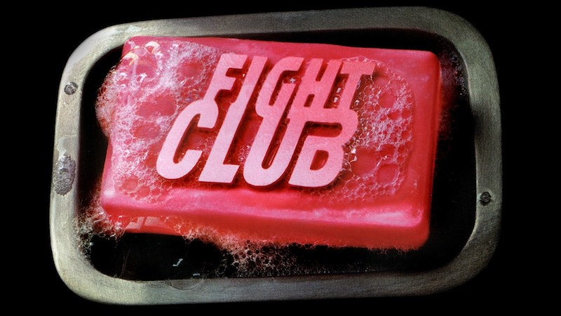
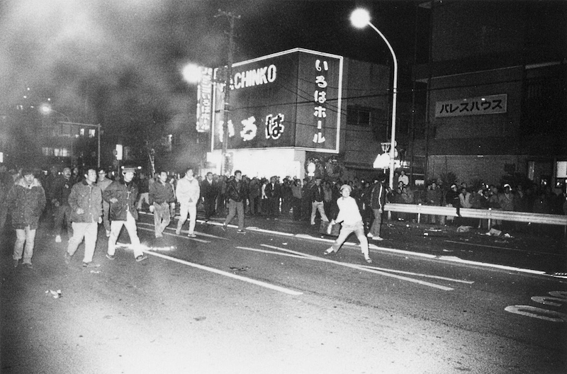
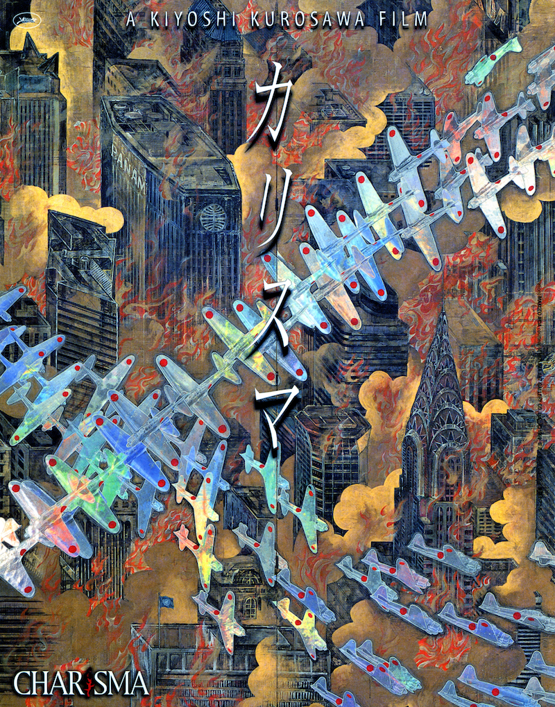

暴動映画
街へ出よう、暴れよう！
こいつでパンを買うな！
いいか！ パンを買うな！
ダイナマイトを買え！
ファイト・クラブFight Club

1999年/アメリカ/139min
監督：デビッド･フィンチャー
出演：ブラッド･ピット、エドワート･ノートン、ヘレナ･ボナム＝カーター
高度資本主義の消費社会に退屈した者たちがカリスマの元に集まり、メイヘム（騒乱）を企む。高層ビルの倒壊によるミレニアムの幕開け「911」を予言した暴動映画。アドレナリンを沸き立てるタイトルロールや、ピクシーズの「Where is My Mind?」が流れるエンドロールまで爆音効果満載。
山谷 やられたらやりかえせ

1985年/日本/110min
監督：佐藤満夫･山岡強一
労働者の町山谷での日雇い労働者と、天皇主義右翼を名乗って労働者を暴力的に支配・統合しようとする暴力団との闘いを軸に、日本近代化の中で生み出された差別と支配構造を暴き出したドキュメンタリー。佐藤監督はこの作品の撮影中に、その遺志を継いだ山岡監督はこの作品の完成後に労働者と敵対していた暴力団組員により殺害された。佐藤監督の死とそれに続く反撃の暴動からこの作品が始まる。
カリスマ

©1999日活・キングレコード・東京テアトル
2000年/日本/104min
監督･脚本：黒沢清
音楽：ゲイリー芦屋
出演：役所広司、池内博之、大杉漣
周囲の木を全て枯らせてしまう「カリスマ」。その木を巡って争う二つの集団。そこに一人の風来坊が現れた。社会の約束事が硬直化の果てに集団同士の対立を生み、その後どうなるのかを思考実験したような本作。ラストで導き出される答えに注目「世界の法則を回復せよ」
ゼイリブThey Live

1988年/アメリカ/93min
監督･音楽：ジョン･カーペンター
出演：ロディ･パイパー、キース･デヴィッド
世界は奴らに支配されている。社会の中枢を牛耳り一般大衆を手なずけ搾取する奴ら。その正体を暴くサングラスを手に入れたホームレスが革命を起こす。「奴らを全員殺せ！」この作品で描かれたことはすでに今、現実のものとなっている。